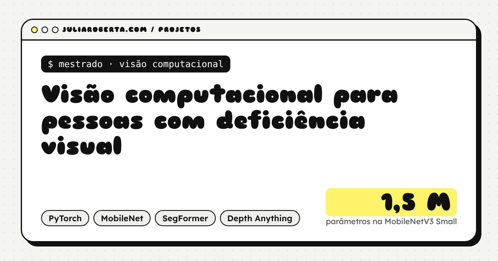
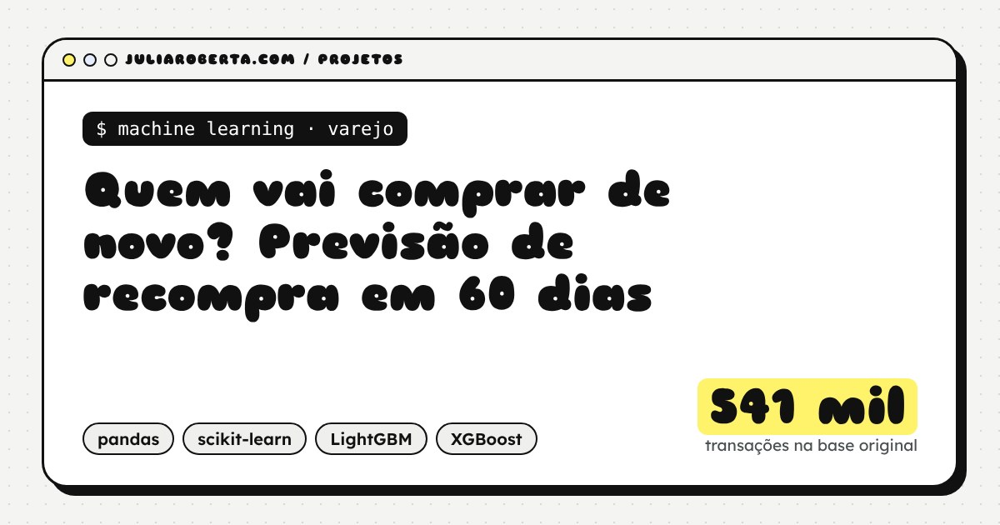
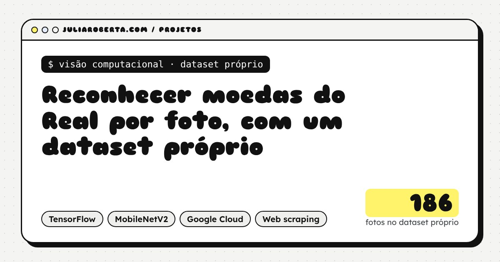
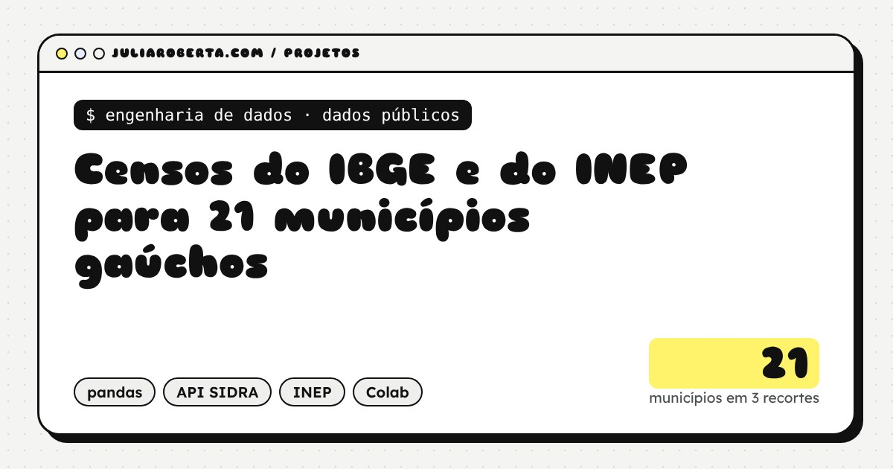

Projetos de dados e IA
Quatro projetos contados do começo ao fim: a pergunta, os dados, o método, o resultado e o que ainda não funciona. O código de cada um está aberto no GitHub.

Visão computacional para pessoas com deficiência visual
Pesquisa de mestrado: MobileNets para reconhecer cenas e um pipeline que aponta os obstáculos mais próximos, pensado para rodar numa mochila.

Quem vai comprar de novo? Previsão de recompra em 60 dias
541 mil transações, segmentação RFM e 12 modelos comparados. A regressão logística com 5 variáveis empatou com as alternativas mais complexas.

Reconhecer moedas do Real por foto, com um dataset próprio
Dataset próprio de 186 fotos e MobileNetV2 por transfer learning, com a revisão de um vazamento entre treino e validação.

Censos do IBGE e do INEP para 21 municípios gaúchos
API do SIDRA e microdados do INEP em notebooks reprodutíveis, de 2010 a 2025. Virou painel, infográficos e matéria de jornal.
Outros repositórios, como a análise da pesquisa State of Data Brazil e o sumarizador de textos em português, estão no GitHub. Os painéis com dados abertos ficam em Infográficos.